(1) Sketch
The beginning of my design process starts with a sketch and then progresses to a detailed sketch. This brainstorming phase includes aligning with the request of clients to ultimately produce a design that matches their vision. The last part of this phase includes creating a final sketch that will captivate end-users and that meets the standards of client feedback.
(2) Design

The design phase focuses on digitizing the sketches from the prior phase. Using tools ranging from Photoshop to Sketch, the sketch of the design becomes a digitized wireframe. The wireframe illustrates the functionality of the design in a clear and concise format.
(3) Render
The final stage consists of developing the final product. Dependent on the client's needs, this ranges from writing code to develop a website to incorporating colors and styles that match the client's desired goals. The end product is a rendered file in the client's choice of format.